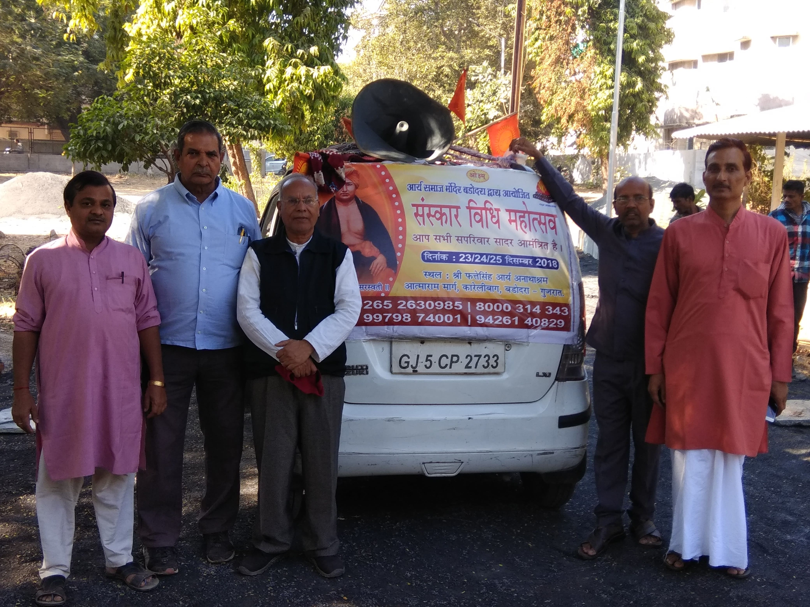
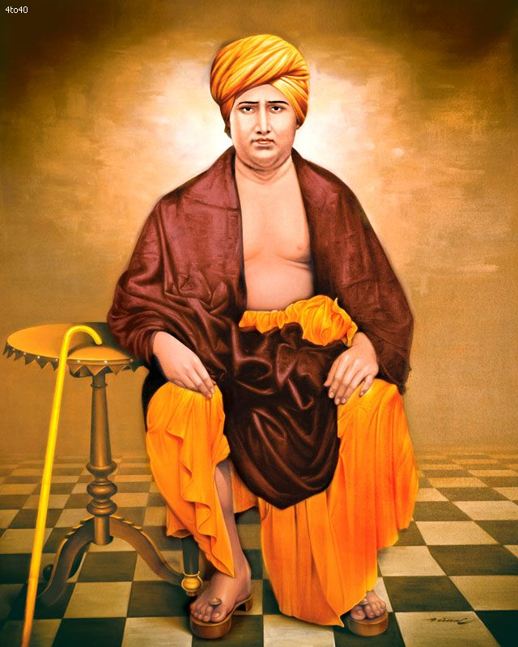

Founder of Aryasamaj
12 February 1824 - 30 October 1883
About Arya Samaj
Arya Samaj is a spiritual way of living with a universal message of peace and happiness. Its ethos is captured in its ten guiding principles based on Vedic teachings that point to a better living.
Aryasamaj Vadodara is a part of the worldwide organization having more than 8000 branches all over the world and is relentlessly active in social, educational, cultural and spiritual, fields.
Arya Samaj was founded on April 7th, 1875 at Bombay, India, by Maharishi Dayanand Saraswati Ji. The purpose was to move the Hindu Dharma away from all the fictitious beliefs, and go back to the teachings of Vedas.
Arya Samaj rejects all forms of ritualistic superstition such as idolatry, ancestor worship, pilgrimage and animal sacrifice, as well as all forms of social oppression such as the caste system, untouchability and child labor.
God is Existent, Conscious All – beatitude, formless, Almighty, Just, Merciful, Unbegotten, Infinite, unchangeable. Beginningless, Incomparable, the support of all, the Lord of all, all pervading, omniscient and controller of all from-within, Eevermature, Imperishable, fearless, eternal, holy and the creator of the universe. To him alone is worship due.

VIVAH SANSKAR (विवाह संस्कार) in Arya Samaj
Arya Samaj society promotes love, justice and righteousness towards all, irrespective of race, caste or creed, and follows the principles given in the Vedas, which are universally true for all of mankind.
Marriage (विवाह) Executed as per the Vedic traditions, the Arya Samaj marriage is legally valid as per the Arya Samaj Marriage Validation Act, 1937 with the provisions of Hindu Marriage Act, 1955
The Arya Samaj marriage is applicable amongst all Hindus, Buddhists, Sikhs and Jains. They can convert themselves into Hindus at the Arya Samaj Mandir if they wish to and marry each other.
Make Donation (दान करें)
Every donation, big or small, makes a significant impact. Your support helps us serve humanity and uphold the principles of Arya Samaj.
How You Can Help:
- 1. Sponsor a child's education or healthcare needs
- 2. Contribute towards our community development programs
- 3. Volunteer your time and skills to make a difference
Join hands with us in our mission to build a better world!
Donate Now and be a part of this noble cause.
Account Holder: Arya Samaj Charitable Trust
Bank: Bank of India
Bank Account Number: 251010110001757
Bank IFSC: BKID0002510